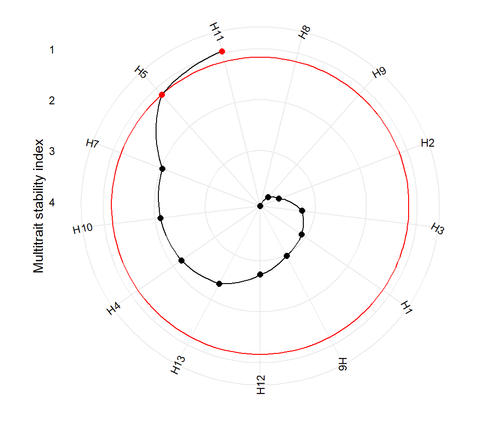
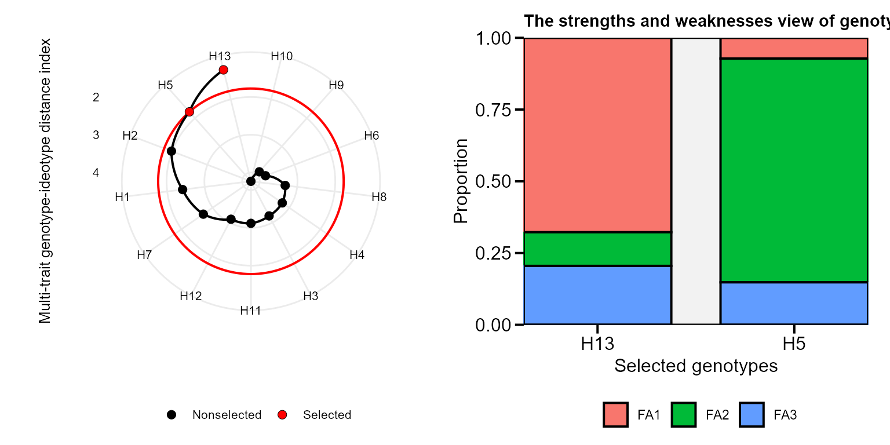

Indexes for simultaneous selection
Tiago Olivoto
2019-12-10
Source:vignettes/vignettes_indexes.Rmd
vignettes_indexes.RmdGetting started
In this section we will use the data examples data_ge and data_ge2 provided in the metan package. For more information, please, see ?data_ge and ?data_ge2. Other data sets can be used provided that the following columns are in the dataset: environment, genotype, block/replicate and response variable(s).
FAI-BLUP index
The FAI-BLUP is a multi-trait index based on factor analysis and ideotype-design recently proposed by Rocha, Machado, and Carneiro (2018). It is based on factor analysis, when the factorial scores of each ideotype are designed according to the desirable and undesirable factors. Then, a spatial probability is estimated based on genotype-ideotype distance, enabling genotype ranking (Rocha, Machado, and Carneiro 2018). The BLUPs from genotypes are obtained with the function waasb() and then the function fai_blup() is used to compute the FAI-BLUP index.
FAI <- data_ge2 %>%
waasb(ENV, GEN, REP, c(KW, NKE, PH, EH)) %>%
fai_blup(DI = c("max, max, max, min"),
UI = c("min, min, min, max"),
SI = 15)
Multi-trait stability index
The function mtsi() is used to compute the multi-trait stability index (MTSI) proposed by Olivoto et al. (2019). The first argument is a model of the class waasb or waas. It is possible to compute the MTSI for both WAASB -stability only- and WAASBY -simultaneous selection for mean performance and stability.
Based on stability only
In the following example, the selection of stable genotypes will consider five traits, namely, KW, NKE, PH, EH, and TKW. Note that the output of the function waasb() is passed to the function mtsi() by the forward-pipe operator %>%. Finally, the MTSI index is plotted using the function plot().
-------------------- Correlation matrix used used in factor analysis -----------------
KW NKE PH EH TKW
KW 1.0000000 0.488572452 0.121921797 -0.0717055 0.49242422
NKE 0.4885725 1.000000000 -0.008208269 -0.1649726 -0.07429822
PH 0.1219218 -0.008208269 1.000000000 0.9218091 0.45649959
EH -0.0717055 -0.164972578 0.921809098 1.0000000 0.27095409
TKW 0.4924242 -0.074298223 0.456499590 0.2709541 1.00000000
---------------------------- Principal component analysis -----------------------------
# A tibble: 5 x 4
PC Eigenvalues `Variance (%)` `Cum. variance (%)`
<chr> <dbl> <dbl> <dbl>
1 PC1 2.207 44.14 44.14
2 PC2 1.619 32.37 76.51
3 PC3 0.8803 17.61 94.12
4 PC4 0.2515 5.029 99.15
5 PC5 0.04252 0.8503 100
--------------------------------- Initial loadings -----------------------------------
# A tibble: 5 x 3
VAR PC1 PC2
<chr> <dbl> <dbl>
1 KW -0.3044 0.8790
2 NKE 0.04341 0.7556
3 PH -0.9492 -0.1468
4 EH -0.8654 -0.3747
5 TKW -0.6801 0.3365
-------------------------- Loadings after varimax rotation ---------------------------
# A tibble: 5 x 3
VAR FA1 FA2
<chr> <dbl> <dbl>
1 KW -0.1469 0.9185
2 NKE 0.1741 0.7365
3 PH -0.9603 0.02052
4 EH -0.9174 -0.2185
5 TKW -0.6112 0.4496
--------------------------- Scores for genotypes-ideotype -----------------------------
# A tibble: 14 x 3
GEN FA1 FA2
<chr> <dbl> <dbl>
1 H1 -4.557 1.527
2 H10 -3.748 0.9115
3 H11 -2.714 0.2621
4 H12 -4.096 1.616
5 H13 -2.757 2.337
6 H2 -4.591 2.574
7 H3 -4.605 1.787
8 H4 -3.806 1.011
9 H5 -1.783 1.366
10 H6 -2.548 3.070
11 H7 -2.823 1.932
12 H8 -4.874 2.844
13 H9 -2.731 3.935
14 ID1 -1.761 0.2023
---------------------------- Multitrait stability index ------------------------------
H11 H5 H7 H10 H4 H13 H12 H6
0.9547527 1.1634372 2.0294043 2.1097181 2.1988634 2.3557556 2.7298239 2.9740342
H1 H3 H2 H9 H8
3.0933493 3.2557853 3.6917741 3.8565582 4.0824809
--------------------------- Selection differential (index) ----------------------------
# A tibble: 5 x 6
VAR Factor Xo Xs SD SDperc
<chr> <chr> <dbl> <dbl> <dbl> <dbl>
1 PH FA 1 0.2649 0.1906 -0.07438 -28.07
2 EH FA 1 0.2356 0.1554 -0.08023 -34.05
3 TKW FA 1 2.440 0.6383 -1.802 -73.84
4 KW FA 2 1.995 0.8026 -1.192 -59.76
5 NKE FA 2 2.133 1.463 -0.6702 -31.42
-------------------------- Mean of Selection differential -----------------------------
Xo Xs SD SDperc
1.4135837 0.6499192 -0.7636645 -45.4284979
------------------------- Selection differential (variables) --------------------------
# A tibble: 5 x 6
VAR Factor xo Xs SD SDperc
<chr> <chr> <dbl> <dbl> <dbl> <dbl>
1 PH FA 1 2.485 2.479 -0.005813 -0.2339
2 EH FA 1 1.343 1.319 -0.02466 -1.836
3 TKW FA 1 338.7 336.9 -1.749 -0.5165
4 KW FA 2 172.9 175.4 2.498 1.445
5 NKE FA 2 511.6 521.2 9.531 1.863
-------------------------------- Selected genotypes -----------------------------------
H11 H5
Based on mean performance and stability
The following code considers that higher values for KW, NKE, TKW are better, and lower values for PH and EH are better. By using wresp = 65, the simultaneous selection for mean performance and stability will prioritize the mean performance (mean of the variables) rather than their stability across environments.
MTSI_index2 <- data_ge2 %>%
waasb(ENV, GEN, REP,
resp = c(KW, NKE, PH, EH, TKW),
mresp = c(100, 100, 0, 0, 100),
wresp = rep(65, 5)) %>% # Default is 50
mtsi(index = "waasby")-------------------- Correlation matrix used used in factor analysis -----------------
KW NKE PH EH TKW
KW 1.0000000 0.7142147 -0.5886031 -0.6133102 0.8785741
NKE 0.7142147 1.0000000 -0.2673719 -0.1973526 0.4408535
PH -0.5886031 -0.2673719 1.0000000 0.9395685 -0.5847858
EH -0.6133102 -0.1973526 0.9395685 1.0000000 -0.5999807
TKW 0.8785741 0.4408535 -0.5847858 -0.5999807 1.0000000
---------------------------- Principal component analysis -----------------------------
# A tibble: 5 x 4
PC Eigenvalues `Variance (%)` `Cum. variance (%)`
<chr> <dbl> <dbl> <dbl>
1 PC1 3.382 67.65 67.65
2 PC2 1.072 21.44 89.09
3 PC3 0.4382 8.764 97.85
4 PC4 0.07814 1.563 99.42
5 PC5 0.02920 0.5841 100.
--------------------------------- Initial loadings -----------------------------------
# A tibble: 5 x 3
VAR PC1 PC2
<chr> <dbl> <dbl>
1 KW -0.9246 -0.3110
2 NKE -0.6019 -0.7014
3 PH 0.8401 -0.4646
4 EH 0.8383 -0.5037
5 TKW -0.8697 -0.1183
-------------------------- Loadings after varimax rotation ---------------------------
# A tibble: 5 x 3
VAR FA1 FA2
<chr> <dbl> <dbl>
1 KW -0.4998 -0.8378
2 NKE -0.0006927 -0.9242
3 PH 0.9402 0.1939
4 EH 0.9643 0.1630
5 TKW -0.5835 -0.6557
--------------------------- Scores for genotypes-ideotype -----------------------------
# A tibble: 14 x 3
GEN FA1 FA2
<chr> <dbl> <dbl>
1 H1 0.08259 -2.925
2 H10 3.073 -3.205
3 H11 2.914 -3.599
4 H12 2.098 -2.244
5 H13 2.014 -3.897
6 H2 1.206 -3.589
7 H3 0.5258 -2.000
8 H4 1.803 -4.521
9 H5 2.671 -4.864
10 H6 1.431 -3.456
11 H7 2.710 -3.178
12 H8 2.639 -1.930
13 H9 3.349 -1.584
14 ID1 4.461 -6.476
---------------------------- Multitrait stability index ------------------------------
H5 H11 H4 H10 H13 H7 H6 H2
2.408739 3.266755 3.299334 3.552567 3.554986 3.733703 4.278164 4.350293
H12 H8 H9 H1 H3
4.846138 4.897080 5.017014 5.637130 5.959275
--------------------------- Selection differential (index) ----------------------------
# A tibble: 5 x 6
VAR Factor Xo Xs SD SDperc
<chr> <chr> <dbl> <dbl> <dbl> <dbl>
1 PH FA 1 44.43 61.06 16.63 37.44
2 EH FA 1 49.24 64.68 15.44 31.36
3 KW FA 2 53.25 72.23 18.98 35.64
4 NKE FA 2 44.98 62.62 17.64 39.22
5 TKW FA 2 53.78 65.08 11.30 21.01
-------------------------- Mean of Selection differential -----------------------------
Xo Xs SD SDperc
49.13563 65.13472 15.99909 32.93445
------------------------- Selection differential (variables) --------------------------
# A tibble: 5 x 6
VAR Factor xo Xs SD SDperc
<chr> <chr> <dbl> <dbl> <dbl> <dbl>
1 PH FA 1 2.485 2.479 -0.005813 -0.2339
2 EH FA 1 1.343 1.319 -0.02466 -1.836
3 KW FA 2 172.9 175.4 2.498 1.445
4 NKE FA 2 511.6 521.2 9.531 1.863
5 TKW FA 2 338.7 336.9 -1.749 -0.5165
-------------------------------- Selected genotypes -----------------------------------
H5 H11
References
Olivoto, T., A. D. C Lúcio, J. A. G. Da silva, B. G. Sari, and M. I. Diel. 2019. “Mean performance and stability in multi-environment trials II: Selection based on multiple traits.” Agronomy Journal.
Rocha, João Romero do Amaral Santos de Car, Juarez Campolina Machado, and Pedro Crescêncio Souza Carneiro. 2018. “Multitrait index based on factor analysis and ideotype-design: proposal and application on elephant grass breeding for bioenergy.” GCB Bioenergy 10 (1): 52–60. https://doi.org/10.1111/gcbb.12443.